Confiança
Superar o medo da água é uma conquista enorme. Cada evolução, flutuar, mergulhar, atravessar a piscina, fortalece a autoestima. A criança percebe: "eu sou capaz".
Aulas para bebês, crianças, jovens e adultos. Um método que respeita o tempo de cada aluno e transforma o medo da água em autonomia.
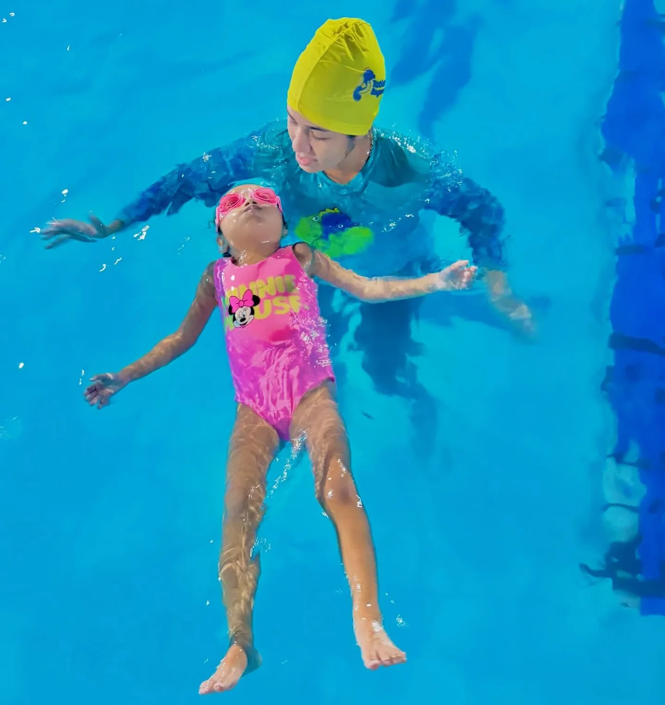
A Acqua Stilo nasceu com um propósito claro: transformar a água em um ambiente de confiança, desenvolvimento e superação. Aqui, cada aluno é único.
Respeitamos o tempo, os medos, a adaptação e a evolução de cada criança, jovem ou adulto. Nosso trabalho é feito de acolhimento, atenção e metodologia adaptada para cada fase.
"Mais que natação, formamos confiança, disciplina e amor pela água."
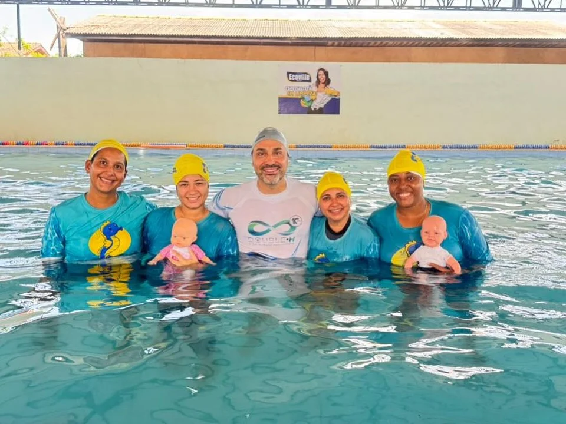
Profissional de Educação Física · Fundadora da Acqua Stilo
Especialista em educação aquática, atua há mais de uma década na formação de crianças, adultos e profissionais, com um trabalho voltado à segurança aquática, à prevenção do afogamento e ao ensino da natação com metodologia humanizada.
A missão dela Transformar vidas por meio da educação aquática, formando pessoas mais seguras, confiantes e preparadas para viver a água com autonomia, e capacitar profissionais para multiplicarem esse conhecimento e construírem uma cultura de prevenção e segurança.
Mais do que ensinar a nadar. Desenvolvemos confiança, autonomia e segurança na água, aula após aula.
Superar o medo da água é uma conquista enorme. Cada evolução, flutuar, mergulhar, atravessar a piscina, fortalece a autoestima. A criança percebe: "eu sou capaz".
Na água o aluno aprende a acreditar em si mesmo, supera desafios e descobre do que é capaz. Essa segurança vai junto para a escola, para as amizades e para a vida.
Saber nadar é uma habilidade para a vida. Previne acidentes, ensina noções de sobrevivência aquática e traz tranquilidade para pais e familiares. Natação não é luxo, é segurança.
Do primeiro contato do bebê com a piscina ao treino específico para concurso público.
Turmas divididas por faixa etária e nível, de 4 meses até a terceira idade. Adaptação, técnica e aperfeiçoamento no ritmo de cada aluno.
Falar sobre turmasAula individual no seu tempo e do seu jeito. Vamos até você, em casa ou no condomínio, com atendimento totalmente personalizado.
Quero aula em casaBaixo impacto nas articulações, alto ganho para o corpo. Ideal para quem busca condicionamento, mobilidade e qualidade de vida.
Quero fazer hidroPreparação específica para o Teste de Aptidão Física de concursos públicos. Treino direcionado à prova que você vai enfrentar.
Quero treinar para o TAFJá na 2ª edição. Cinco dias de atividades na água e fora dela, para crianças de 4 a 15 anos, nas férias escolares.
Avisar da próximaRecorrência no cartão de crédito ou boleto, do jeito que ficar melhor para você. Aceitamos Visa, Mastercard e Elo.
Falar com o financeiroA natação infantil fortalece vínculos, desenvolve confiança e transforma pequenos desafios em grandes conquistas. E para o adulto, nunca é tarde para começar.
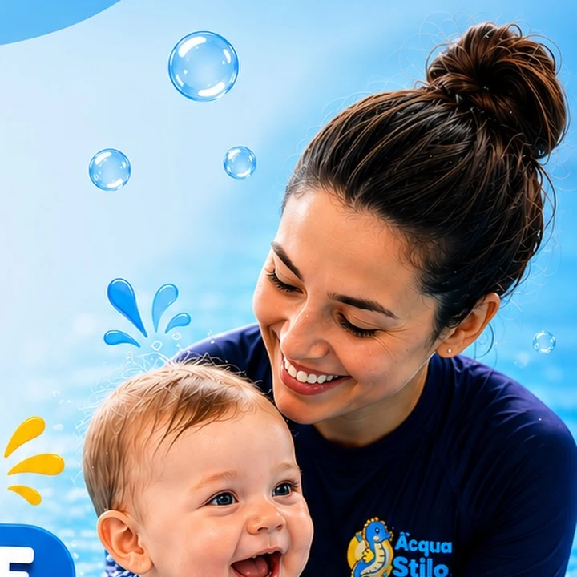
Adaptação ao meio líquido e desenvolvimento psicomotor, sempre com o responsável na piscina.
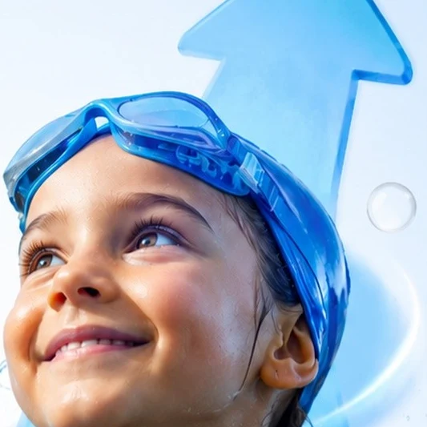
Coordenação, equilíbrio e as primeiras conquistas dentro da água, aprendendo brincando.
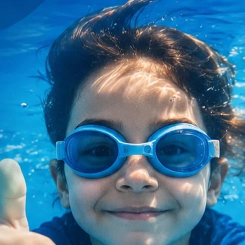
Aperfeiçoamento técnico dos quatro nados, autonomia e condicionamento físico.
Trabalha o corpo inteiro de forma integrada e forma alunos mais saudáveis, disciplinados e seguros.
O aluno precisa coordenar braços, pernas, respiração e equilíbrio ao mesmo tempo. Melhora a percepção corporal e até o desempenho escolar.
Cada movimento tem técnica, sequência e repetição. O aluno aprende a ouvir comandos, respeitar regras e ter constância.
Fortalece o sistema cardiorrespiratório, aumenta a capacidade pulmonar e ajuda no controle da ansiedade.
Superar o medo da água fortalece a autoestima. Cada evolução mostra à criança que ela é capaz.
Previne acidentes e ensina noções de sobrevivência aquática. O afogamento é silencioso e pode acontecer em segundos.
Investir na natação é investir em saúde, autonomia e qualidade de vida. A natação não é luxo: é segurança.
Não tem grito. Não tem barulho. Muitas vezes acontece com adulto por perto.
Por isso a Acqua Stilo não trata a natação como uma atividade a mais na agenda. Saber se comportar na água é uma habilidade de sobrevivência, e é o centro do nosso trabalho desde a primeira aula.
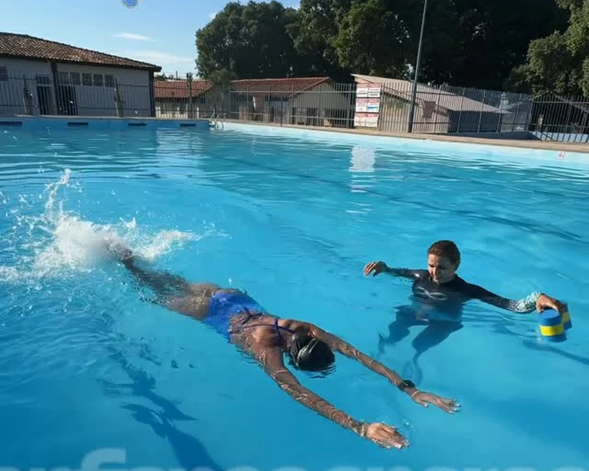
Arraste para o lado para ver mais
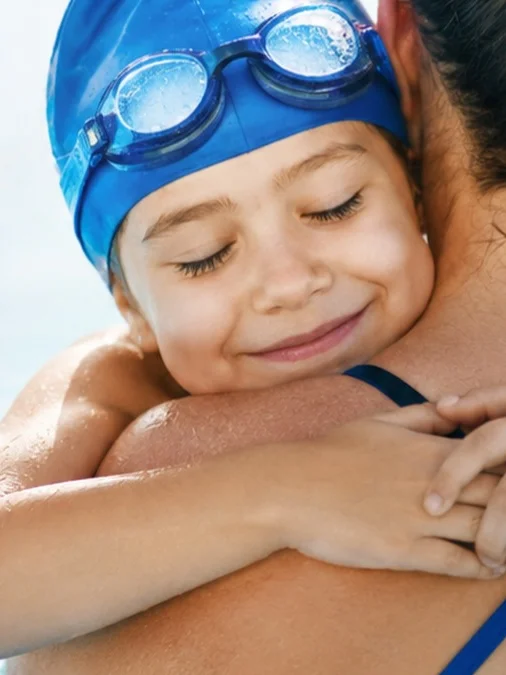
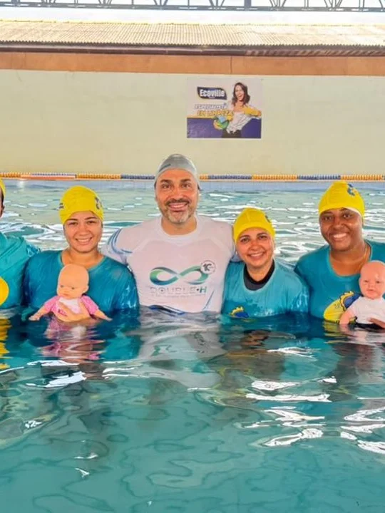
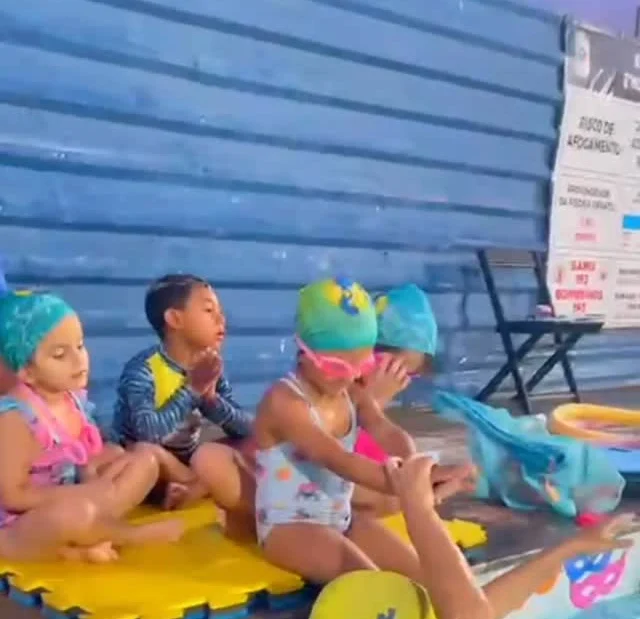
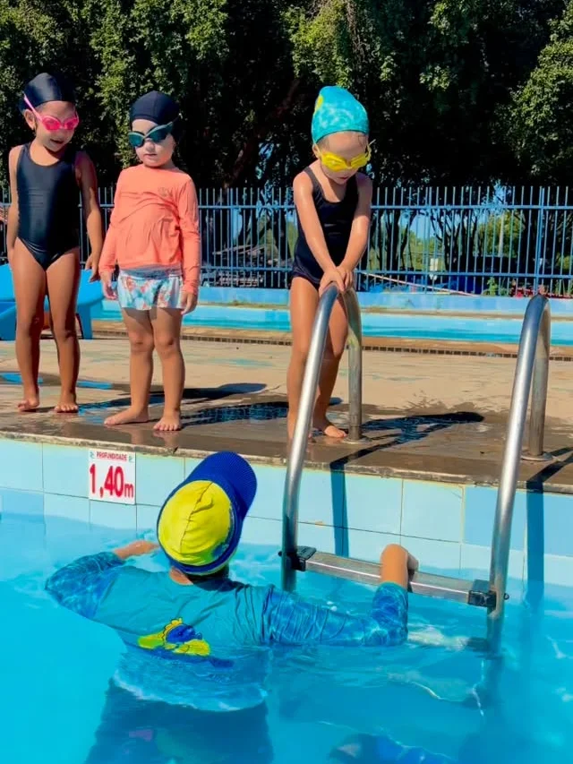
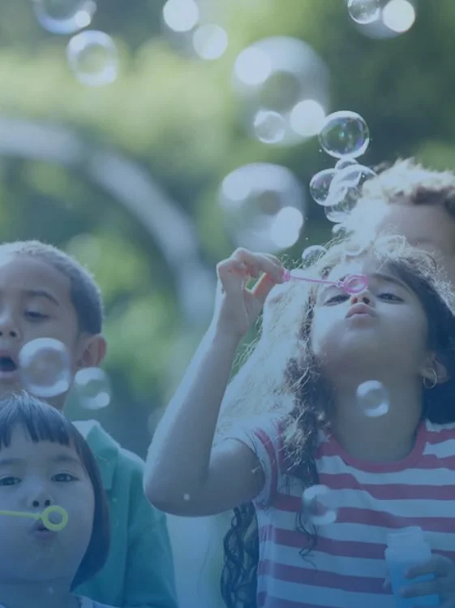
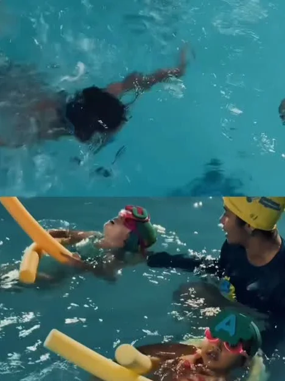
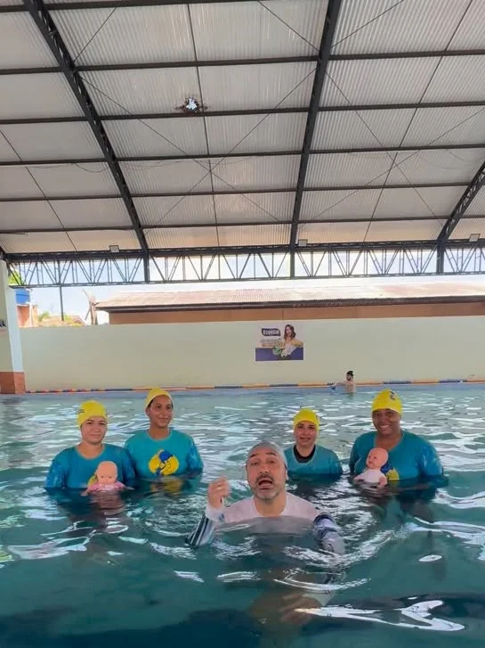
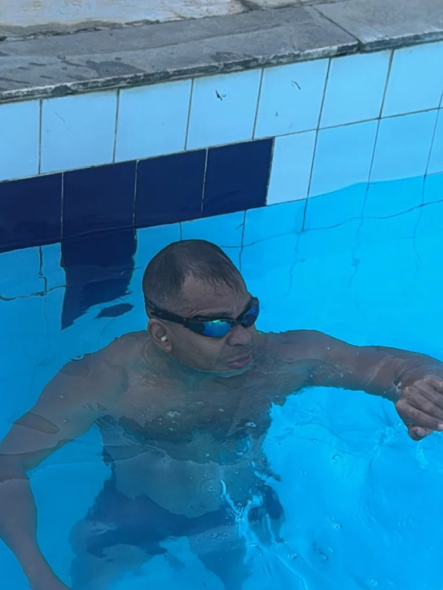
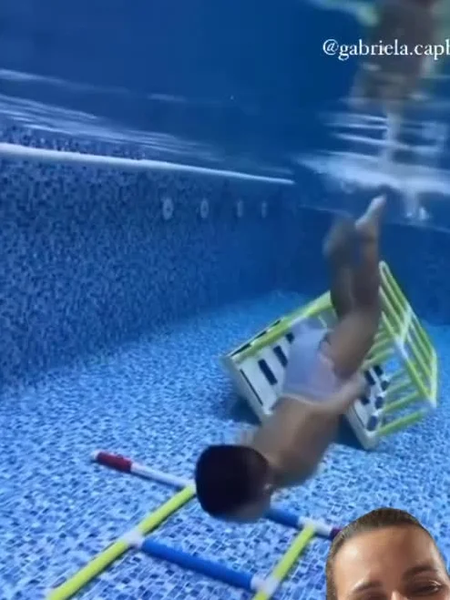
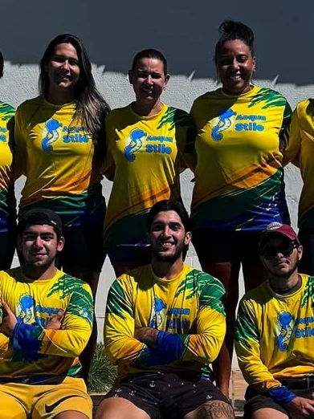
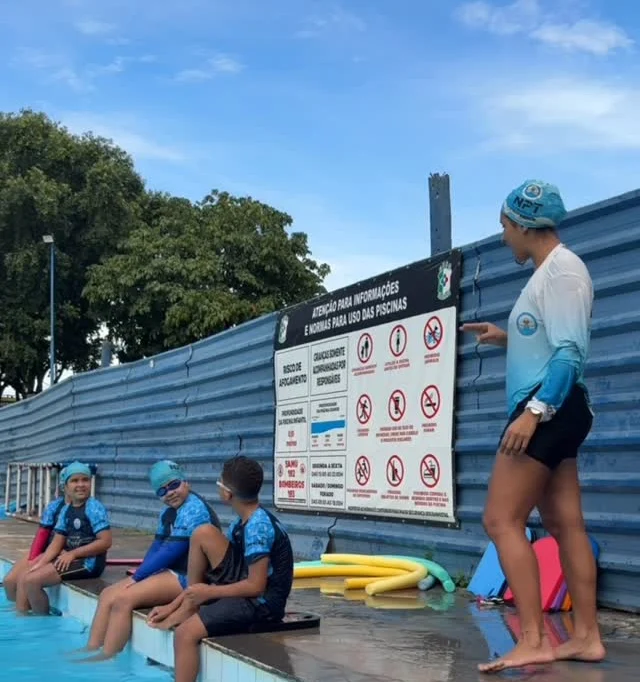
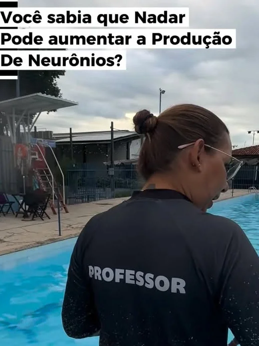
Natação do seu jeito, com metodologia personalizada que respeita seu ritmo e o seu objetivo.
Escolha a unidade mais perto de você. Toque no mapa para abrir a rota direto no seu celular.
Clube dos Subtenentes e Sargentos · Cuiabá/MT
Piscina semiolímpica coberta
Cuiabá/MT
Água sempre na temperatura ideal, o ano inteiro
Vagas limitadas por turma. Confirme a disponibilidade do horário que você quer pelo WhatsApp.
Piscina aquecida · Rua I, nº 19
Terça e quinta · 8h, 8h40, 14h e 15h20
Terça e quinta · 10h
Terça e quinta · 9h20, 10h10, 14h40 e 16h10
Segunda e quarta · 18h
Segunda a quinta · 6h, 6h45 e 19h
Clube dos Subtenentes e Sargentos
Terça e quinta · 9h, 18h e 19h
Terça e quinta · 15h, 17h, 18h e 19h15
Segunda e quarta · 19h15
Terça e quinta · 6h, 18h e 19h
Toque para assistir no Instagram.
13 avaliações
Google · Acqua Stilo Natação Unidade 1
Nota 5,0 é o resultado de aula após aula, de criança que perdeu o medo, de adulto que aprendeu a nadar depois dos 40 e de pai que dorme mais tranquilo.
Se você já é aluno ou responsável, sua avaliação ajuda outras famílias de Cuiabá a encontrarem a gente.
Três dias reunindo profissionais, estudantes e apaixonados pela natação. Conteúdo sobre natação infantil, metodologia para bebês, os quatro nados, hidroginástica e inclusão de pessoas autistas nas aulas, com aulas teóricas e práticas.
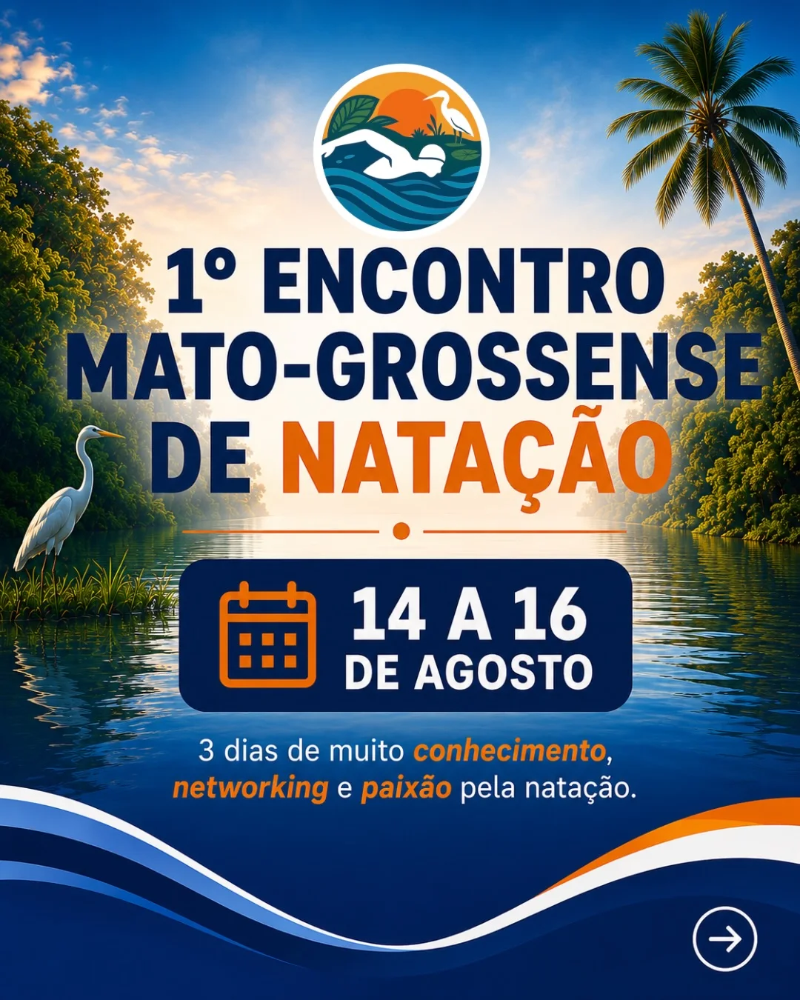
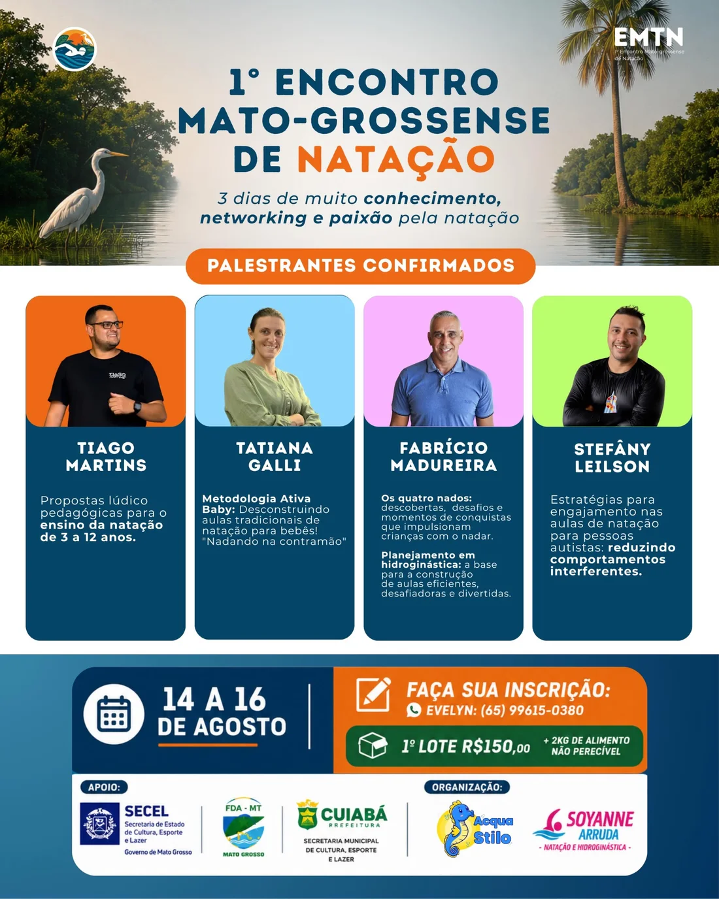
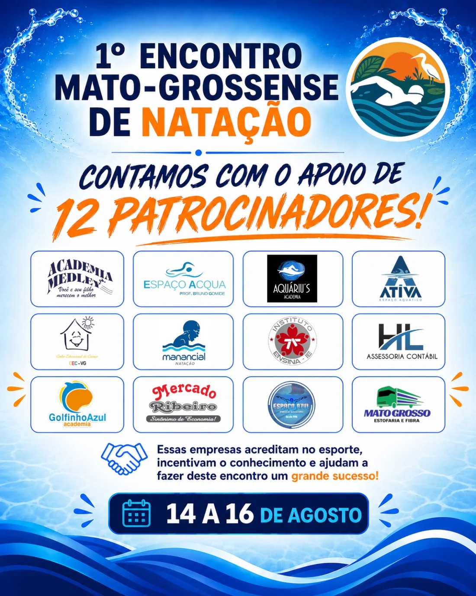
A camisa oficial do EMTN e os produtos da Acqua Stilo vão ficar disponíveis para compra aqui mesmo no site, com escolha de tamanho e pagamento online.
Quer garantir a sua antes de todo mundo? Chame no WhatsApp e entre na lista.
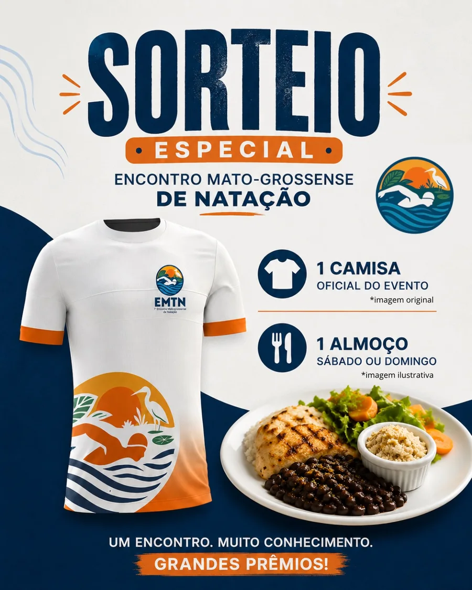
Bastidores das aulas, dicas para os pais e novidades das turmas em @acquastilo
Agende uma aula experimental, tire suas dúvidas ou fale com o financeiro. Estamos prontos para receber você.
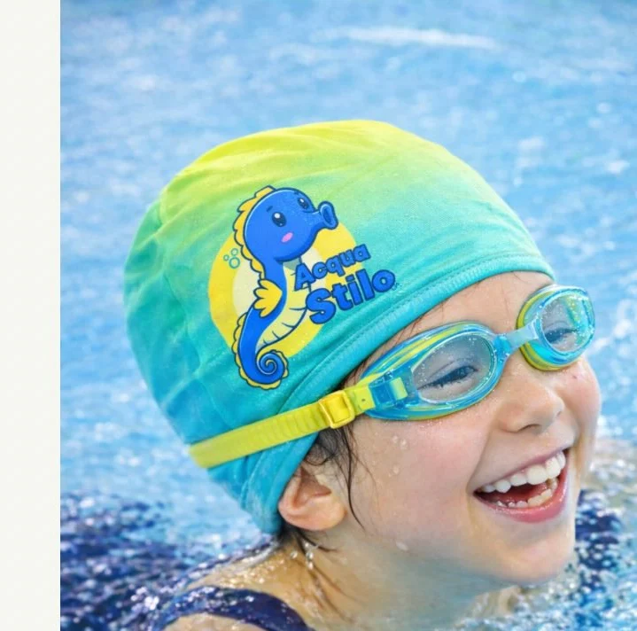